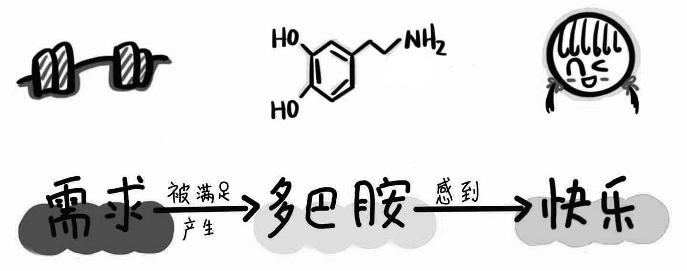
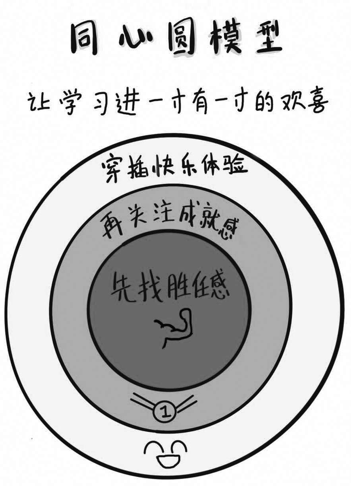

如果我问你，在学习的过程中，最有可能让你轻言放弃的理由是什么？我想排名第一的答案一定是“枯燥”。再有毅力和动力的人，如果在学习过程中一直像上了发条的机器人一样，即便很努力也完全感受不到快乐，那么他肯定不会坚持太久。有没有什么方法，能够化腐朽为神奇，让枯燥的学习过程变得有趣呢？
在讨论学习兴趣之前，我们需要首先了解快乐的含义。我个人很喜欢的德国哲学家康德曾给快乐下过一个定义，他说“快乐就是我们的需求得到了满足”。这个定义听起来非常直白，但大道至简，真正的智慧往往就蕴含在这种简单的道理中。康德对快乐的定义已经在生物学的角度上得到了印证。生物学研究发现，当一个人的某个需求得到满足的时候，他身体里的多巴胺就会大量分泌，多巴胺又会刺激神经元，让这个人的大脑处在一种亢奋的状态，这时他就会感到特别快乐。

学习的乐趣，归根结底也是快乐的一种形式，它自然也遵从快乐的产生原理。要想在枯燥的学习中感受到快乐，我们可以利用康德和生物学家的研究结果，在学习中多给自己找一些满足感，以刺激多巴胺的分泌。[书ji分 享V 信wsyy 5437]
那么，什么样的事情能给我们带来满足感呢？美国心理学家卡尔·普法夫曼曾经对这个命题做过研究。他对来自不同领域的人开展了一项关于满足感的调查，发现有三种情况能让人们产生满足感，这三种情况分别是：胜任一些事，取得一些成就，获得一些积极正面的体验。
这样我们就得到了一个正向循环：当我们努力去胜任工作，取得成就或者赢得正面体验时，我们就能获得满足感；我们内心的需求被满足了，身体就会大量分泌多巴胺；多巴胺反过来又刺激大脑，让我们感受到快乐。根据这个快乐公式，当我们情绪不好时，就可以从这三个满足感的源头出发，激发自己的身体分泌多巴胺。
受普法夫曼研究的启发，我把这三个满足感的源头做成了一个同心圆模型，然后应用在自己和孩子的学习中，效果特别好。这个同心圆由3个圆环构成，从内到外代表的意思分别是：先在学习中找到胜任感，再从学习中找到成就感，最后记得给自己穿插一些快乐的学习体验。这样做的目的，就是为了摆脱学习过程中的枯燥感，让学习进一寸有一寸的欢喜。

先找胜任感
在同心圆的模型中，位于最核心地位的就是“先找胜任感”。为什么要先找胜任感，而不是成就感呢？很简单，因为要想从学习中找到乐趣，最基本的要求就是“能看懂”。学习这件事最讲究循序渐进，如果基础都没有打好，甚至还没搞懂自己在学什么，就强迫自己硬着头皮学下去，肯定会越学越痛苦。在这种状态下，别提乐趣了，估计你连坚持下去都难。
胜任感虽然很重要，可学习内容大多都会有难有易，我们应该如何保证自己时刻保持胜任感呢？这就需要我们掌握好两个关键点：合理分解学习任务和过程导向。
第一点，合理分解学习任务，就是说我们在学习的过程中，要把疑难的任务化整为零，逐个击破，而不是凭借一腔热血埋头蛮干，恨不得一口吃个胖子。特别是在遇到困难时，你千万不要强行逼迫自己去一次次碰南墙——不管多有毅力的人，南墙撞多了也会想放弃和逃避。
这时，我们就要试着分解自己的学习任务，分析一下：这部分自己为什么听不懂？是不是其中有几个知识点还不理解，还是因为有些概念没搞明白？找到原因之后，一定要立刻停下来，先把发现的知识漏洞一步步补上，直到在补漏洞的过程中，认为自己已经搞懂这些知识点了，然后再带着自信一路“打怪升级”，挑战更大更复杂的难题。
第二点，过程导向，它是指我们要在学习中关注过程，而不仅仅是结果。对于我们来说，关注过程绝对是一件知易行难的事情。回忆一下你小时候，每次向家长汇报考试成绩是不是都特别难熬？因为每次考试成绩一出来，家长都会第一时间关注哪里扣分了，分数高还是低。如果考得好就让你不要骄傲，继续努力，如果考得不好就是一大堆指责和批评，很少有家长关注这些成绩背后的过程，孩子们得到的也大多数是成绩带来的负面反馈。
孩子如果总是被家长的负面反馈所包围，就会逐渐失去自信心，甚至陷入自我怀疑。在这种只关注结果而不关注过程的环境下长大的孩子，一旦看到自己的学习成绩不理想，就会产生焦虑和烦躁，失去对学习的胜任感。
要想改变这种状况，我们需要在学习的过程中为孩子创造一些胜任感，同时减少自己对学习成绩和考试结果的过度关注。比如，我们可以引导孩子在学习过程中感受到自己有能力学会更多知识，将孩子的注意力转移到自己能够修补好越来越多的知识漏洞上来，让他觉得自己可以胜任学习这件事。只有我们不再关注结果，并且不断给孩子正向反馈，他对学习的态度才能由消极转为积极，他才会觉得学习这件事也没那么枯燥，甚至还有点儿意思。
再关注成就感
找到学习的胜任感之后，我们就会感觉到，学习原来并不是一件枯燥的苦差事，甚至还有点儿意思。但这个时候，我们只是往前进了一小步，内心不那么排斥学习了，此时距离真正享受到学习的乐趣还有一段距离。接下来，我们为同心圆模型中的第二环而努力——在学习中找成就感。
怎么找到成就感呢？一个最常见的办法就是即时激励。很多人都爱玩游戏，那你有没有想过，为何我们一打开游戏界面就停不下来，闯完一关还想再闯下一关，有时甚至会忘记时间的流逝呢？这里面有一个很重要的原因，就在于游戏设计人员设置了很多小奖励，这些不断取得的小奖励能够让我们随时获得成就感，以至于沉迷在游戏的世界中不能自拔。
我们在学习的时候也可以参考游戏的机制，给自己设置一些及时的反馈和奖励。比如，我们可以许诺自己，如果这个月能够完成3节在线课程并且按时上交作业，就奖励自己清掉购物车里一件心仪已久的物品。这样，你在学习的过程中不断回顾自己实现了哪些小目标，成就感自然就会油然而生。
除了即时激励，游戏机制中还有一个更厉害的方法，就是故事化设定。你可能没有关注过这一点，但是仔细想想，那些热门的游戏其实无一不是将自己的情节嵌套在一个个史诗般的故事之中，这样做的目的就是为了让玩家有成就感。毕竟，一个在现实世界中各方面都表现平平的小人物，到了游戏中居然能成为一呼百应的大英雄，时而在艰难的时局中拯救世界，时而与佳人花前月下……光是想想都让人激动不已。
在学习过程中，我们同样可以借鉴这种方法，把自己的学习计划和目标也进行故事化、剧情化。我有个朋友想考司法考试，但他不是法律专业出身，很可能要准备一两年才考得上。这么长的学习计划，一般人很难坚持下来。为了不让自己半途而废，这位朋友给他的复习计划起了一个高大上的代号，叫作“神圣的荣誉”——因为他觉得通过司法考试，成为司法机关的一员，是一件非常神圣的事。而且每次当别人问他“你司法考试准备得怎么样了”，他就说“我离神圣的荣誉又近了一步”……通过这种方式，他把自己的学习想象成一场伟大的战斗，每实现一个小目标都特别有成就感。
你可能会怀疑，只是给自己的学习计划取个有情怀的名字，就有这么大的作用吗？我们可以想一想，每当国际上有军事行动，主事者都会为这些行动命名，他们通过这种方式告诉参战的军人，“你们正在完成的是一件将被载入史册的荣耀使命”，从而增加军人的成就感。学习也是如此，我们如果只把它当成一件很平凡的事情，必然会学得很累，很无聊，毫无乐趣而言。但如果我们能把自己想象成一个在疲惫生活中实现英雄理想的人，把我们的学习计划改编成史诗般壮丽的故事设定，就会从学习中得到很大的乐趣。
成年人习惯了在生活和工作中负重前行，就连自己的学习计划也总是带着功利性。可是无论是孩子还是大人，每个人心中其实都有一个英雄梦，都渴望自己能像漫威的超级英雄一样，一个人也能拯救全世界。我们要做的，就是把这些深藏在心底的英雄情结召唤出来，让它不断为我们的学习之旅注入超能量。
穿插快乐体验
同心圆模型中的最后一环，是给自己创造一些快乐的学习体验。有些时候，我们可能无法在学习中找到胜任感和成就感，但是学习目标又必须达到，在这种情况下，我们怎样才能让自己在枯燥的学习过程中坚持下来呢？这时候就该让“快乐体验”圆环上场了。当然，在找到胜任感和成就感的基础上，再营造一些快乐的体验，效果肯定会更好。
不过，学习毕竟是一场艰苦的旅行，我们不可能随时都保持快乐的心态。那么，在哪些时间点上安排快乐体验效果最好呢？一些科学家对此做了研究。
诺贝尔奖得主、心理学家丹尼尔·卡尼曼经过研究发现，人们在做一件事的时候，对体验的记忆主要由两个因素决定：一个是高峰时的感觉，也就是最快乐或者最痛苦的感觉；另一个是最终结束时的感觉。而整个过程中其他时间段的体验，我们通常没有太深刻的记忆。这个研究结果被称为“峰终定律”。
峰终定律给我的启示是：我们不需要在学习的全程都保持好的体验，我们只需要在两个关键记忆点上给自己制造一些快乐体验，就能让自己享受到学习的乐趣。
第一个记忆点，是负面感受的峰值马上要出现的时候。经常学习新知识的人，难免会遇到某个知识点反复背诵也记不住，或者某个难关怎么钻研也攻克不下来的情况。这个时候，我们常常会觉得万念俱灰，心情特别烦躁，甚至认为自己根本不适合学习这门课程。在这种自己学不下去的糟糕时刻，我们就要及时给自己穿插安排一个快乐体验。
第二个记忆点，就是我们每次结束学习的时候。此时的体验，我们往往会在下一次开始学习时仍旧记得，所以要尽量保证自己每次的学习过程都有一个愉快的结尾。
我有一个朋友因为孩子在学习上偏科而苦恼。他的孩子非常喜欢数学，但是英语很差，连达到及格都费劲。因为在英语学习上没有胜任感和成就感，所以孩子特别讨厌做英语作业，每次给孩子辅导英语作业时，家里都像发生了一场世界大战。孩子磨磨蹭蹭不愿意落笔，大人火气上来就河东狮吼，基本每次都会不欢而散。时间一长，一提起写英语作业，孩子就本能地逃避排斥，毕竟之前英语作业的糟糕体验让他一直记忆犹新。
后来，我建议他用同心圆模型中的快乐体验改变现状。朋友认真地学习了峰终定律，找到了孩子英语学习的两个关键点：首先是在辅导孩子作业时，他要努力克制负面情绪的出现。一旦感觉自己马上要发火了，或者孩子要崩溃了，就要赶紧停下手头的英语练习，转而让孩子做几道自己擅长的数学题，然后便使劲表扬他在数学上的良好表现。等孩子的情绪好转了，再回到英语作业上来。这么做的目的，是为了避免即将爆发的坏情绪，在孩子马上要出现负面体验峰值时，及时扭转乾坤，把坏情绪转化为积极体验。
同时，朋友还尽力保证孩子每次写英语作业时都以一个愉快的状态结束。根据峰终定律，如果孩子每次都带着负面情绪匆匆结束学习，那么他就会牢牢记住这种糟糕的感受，然后在下次做英语作业的时候就会产生逃避心理。
为了抓住学习结束时的关键点，每次做完英语作业后，朋友都会给孩子安排一个愉快的收尾环节。小孩子都喜欢做游戏，于是朋友就把每天的游戏时间安排在英语作业完成之后的这段时间里，并且在游戏开始之前就郑重其事地告诉孩子，因为他今天英语作业完成得非常棒，所以写完作业后就可以全身心地享受游戏时光。这样快乐地结束每一次学习，让孩子把积极情绪延续到下一次做英语作业时，天长日久，孩子居然真的喜欢上了英语。